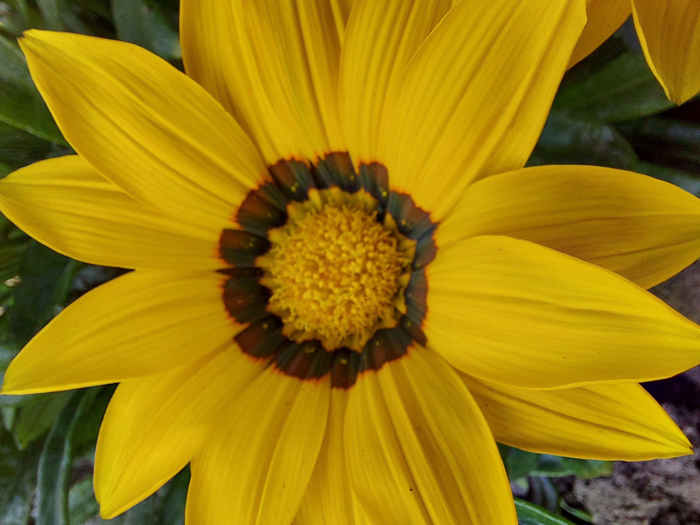
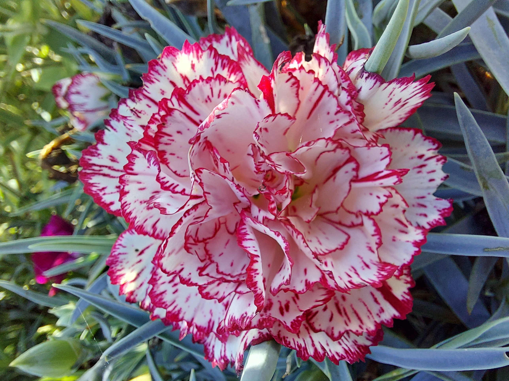

Napvirág
A Napvirág becsületes neve záporvirág, de nem véletlenül terjedt el ilyen elnevezésével, virágai a napsütés hatására csodálatos átalakuláson mennek keresztül!Bővebben

Árvácska
A kerti árvácska az ibolyafélék családjába tartozik, melyet a 19. században több faj, köztük a háromszínű árvácska vagy vadárvácska keresztezéséből hoztak létre.Bővebben

Szegfű
A kerti szegfű a szegfűfélék családjába tartozó évelő növény. Nagyon kedvelt és változatos megjelenésű alacsony vagy közepes termetű dísznövény.Bővebben